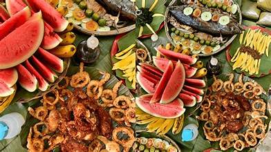
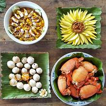
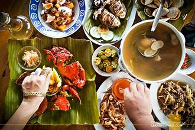

Overview
The cuisine of Zamboanga del Sur reflects the province's multicultural heritage, blending Visayan, Moro, and indigenous Subanen culinary traditions. Fresh seafood, tropical fruits, and locally grown produce form the foundation of the provincial diet.
Everyday Staples
Rice is the primary staple food, accompanied by fish, vegetables, and occasionally meat. In some areas, corn is also a dietary staple. Coconut milk is widely used in both sweet and savory dishes, reflecting the abundance of coconut in the province.
Seafood
Given its extensive coastline, seafood is central to the cuisine of Zamboanga del Sur. Fresh fish, crab, shrimp, squid, and shellfish from Illana Bay are prepared in various ways — grilled, steamed, stewed in coconut milk, or made into kinilaw.
Local Delicacies
The province has a number of traditional kakanin (rice-based delicacies) and sweets. Puto, bibingka, and various native rice cakes are prepared during fiestas and special occasions. Local markets offer a variety of homemade sweets made from tropical fruits and root crops.
Moro and Indigenous Influences
Moro cuisine introduces dishes prepared with strong spices, coconut milk, and halal cooking methods. Dishes such as piaparan reflect the flavor profiles of Muslim cooking. Indigenous communities contribute foraged vegetables, wild game, and root crops to the local food culture.
Food Tourism
Local restaurants and carinderia in Pagadian City offer a range of dishes showcasing the province's culinary diversity. Food tours and market visits are increasingly popular among tourists wishing to experience authentic provincial flavors.
Key Facts
- Staple Food: Rice and corn
- Popular Dish: Sinuglaw (grilled pork + ceviche)
- Local Delicacy: Puto Zambo, native kakanin
- Seafood: Fresh fish, crab, shrimp from Illana Bay
- Influence: Visayan, Moro, and indigenous flavors